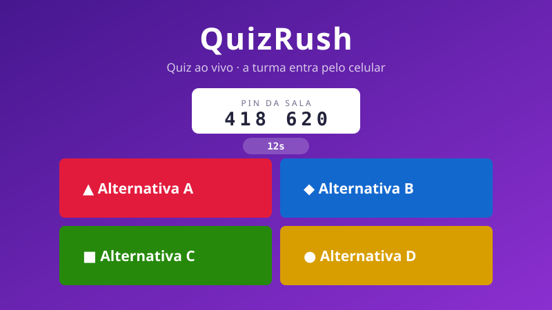

Abrir o jogo ↗Este jogo roda em servidor proprio e abre numa aba nova. Se o servidor estiver dormindo, a primeira abertura pode demorar alguns segundos.
Como jogar: Abra no celular, digite o PIN da sala e responda antes do tempo acabar.
Quiz ao vivo no estilo Kahoot: o professor abre a sala num projetor e a turma entra pelo celular com um PIN de seis digitos. Pontua por acerto e por velocidade.
Clique dentro do jogo antes de usar o teclado.